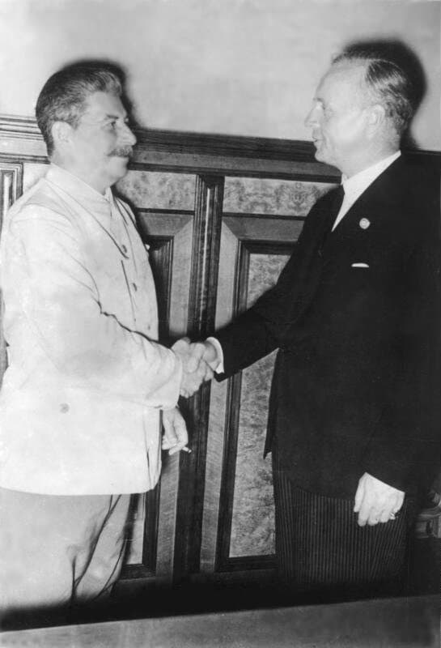

23 сентября 1939 года министры иностранных дел своих стран Вячеслав Молотов и Иоахим фон Риббентроп подписывают в Москве "Договор о ненападении и секретный протокол к нему".
Посол отбывает с оркестром.
Сохранились воспоминания немцев, солдат 39-го года: - когда нам зачитали договор, стало ясно, - война.
1 сентября 1939 года, через неделю, нацистская Германия нападает на Польшу.
Началась Вторая мировая война.
3-го сентября 1939 года Франция и Великобритания объявляют войну Германии, в соответствии с союзническим долгом перед Польшей.
17 сентября 1939 года СССР вступает на территорию Польши.
28 сентября 1939 года СССР и Германия подписывают договор "О дружбе и границе", в котором фиксировались границы разделенной Польши.
Ингерманландские финны максимально мобилизуются на войну с Финляндией (30 ноября 1939 г. - 12 марта 1940 г.).
Советский союз исключается из Лиги наций.
22 июня 1941 года Германия объявляет войну Советскому Союзу, которая в Российской историографии названа Отечественной. На эту войну ингерманландские финны на первом этапе не мобилизуются. Можно предположить, на них были иные планы.
26 ноября Япония нападает на Соединенные штаты Америки.
Людские потери в Первой мировой войне:
Россия ≈ 2 млн.Людские потери во Второй мировой войне:
СССР ≈ 24 миллиона человек. Из них 1 млн. только в Ленинграде.Сравнивая жертвы, можно заметить, что разница в потерях отлична на порядок. Следуя такой логике третья мировая потребует от нашей страны 200 миллионных жертв. Мы не справимся. Еще должны останемся 60 млн.
Много разных ответов слышал на вопрос о причинах Первой и Второй мировых войн. Так и не понял.
Если причины объективные, такие как перенаселение, экономика, голод, религиозный или футбольный фанатизм и т.п., избежать их нельзя.
Если они возникают по прихоти вменяемых негодяев, хотелось бы еще на этом Свете увидеть как количество причиненной боли возвращается к ним бумерангом.
Закончилась Вторая мировая война 2 сентября 1945 года, подписанием акта капитуляции Японии на борту американского линкора Миссури - продолжалась 6 лет ровно.
Из них два с половиной года Ингерманландия находилась под оккупацией.